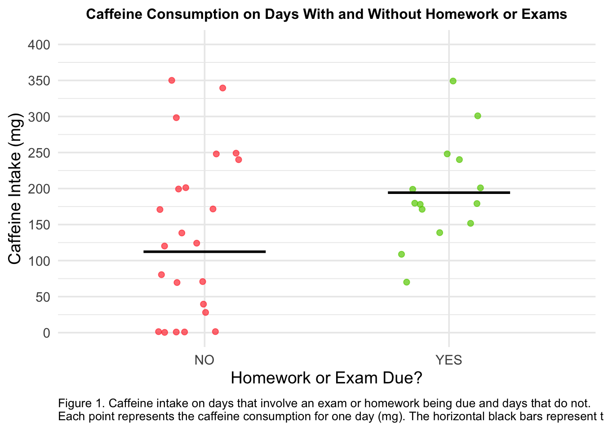
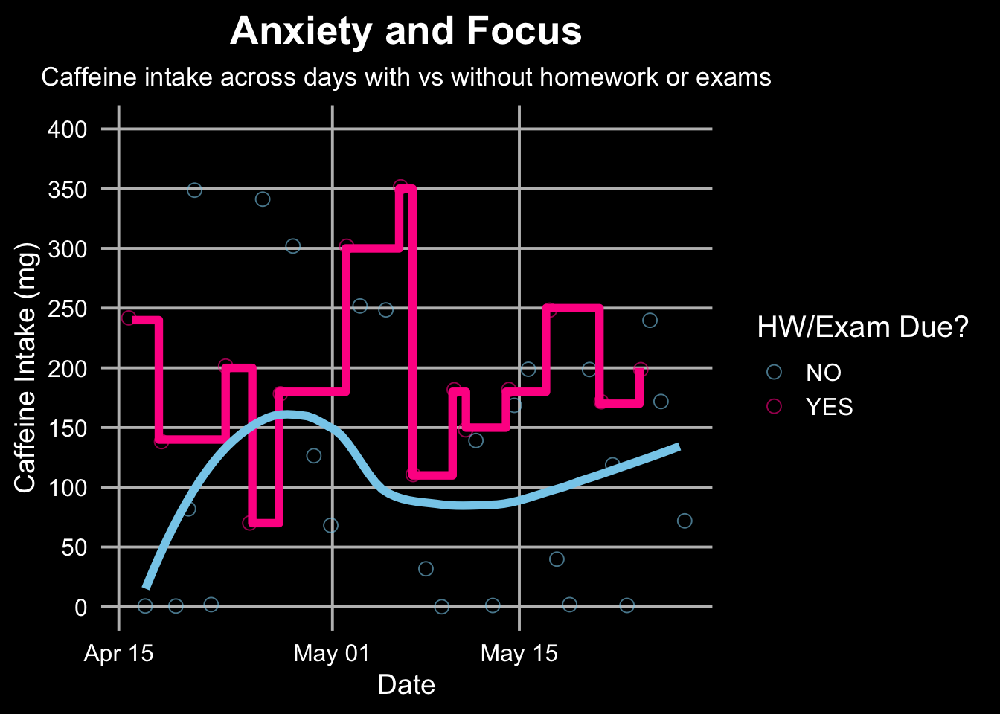

── Attaching core tidyverse packages ──────────────────────── tidyverse 2.0.0 ──
✔ dplyr 1.1.4 ✔ readr 2.1.5
✔ forcats 1.0.0 ✔ stringr 1.5.1
✔ ggplot2 3.5.2 ✔ tibble 3.2.1
✔ lubridate 1.9.4 ✔ tidyr 1.3.1
✔ purrr 1.0.4
── Conflicts ────────────────────────────────────────── tidyverse_conflicts() ──
✖ dplyr::filter() masks stats::filter()
✖ dplyr::lag() masks stats::lag()
ℹ Use the conflicted package (<http://conflicted.r-lib.org/>) to force all conflicts to become errors
library(flextable)
Attaching package: 'flextable'
The following object is masked from 'package:purrr':
compose
library(gt)library(janitor)
Attaching package: 'janitor'
The following objects are masked from 'package:stats':
chisq.test, fisher.test
library(MuMIn)library(scales)
Attaching package: 'scales'
The following object is masked from 'package:purrr':
discard
The following object is masked from 'package:readr':
col_factor
library(here)
here() starts at /Users/marcelomiller/Downloads/GitHub/ENVS_193DS_homework-03
The data that I have gathered for my caffeine study consist primarily of binomial categorical data (hw/exam due and exercised) and continuous variables (caffeine amount), along with ordinal variables (date and time). The primary way that I would be comparing a response and independent variables are by comparing the means of caffeine amounts on days that I have homework/exam due vs those that I don’t, with the intention of proving or denying the suspicion I have that I consume more caffeine on academically demanding days.
b.)
Rows: 42 Columns: 7
── Column specification ────────────────────────────────────────────────────────
Delimiter: ","
chr (3): HW/Exam Due, Wake Time, Exercised
dbl (3): Caffeine (mg), Sleep (hrs), Class Count
date (1): Date
ℹ Use `spec()` to retrieve the full column specification for this data.
ℹ Specify the column types or set `show_col_types = FALSE` to quiet this message.
Warning: Removed 5 rows containing missing values or values outside the scale range
(`geom_point()`).

Homework or Exam Due?
Average Caffeine Intake (mg)
NO
112.3214
YES
194.2857
#2
a.) When I think of caffeine I picture a feeling of both anxious energy and focus. The clearest way that I could depict days with homework/exams to embody the chaotic aspect that caffeine brings, while the days without so much academic stress will demonstrate the focus part of the substance. I think sticking with the original scatter/jitterplot format for the category of “YES” for HW/Exam will do well to emphasize the rigidity and lack of control that comes from the caffeine. The “NO” category could be depicted as a smooth flowing line or bar plot, with more stable fluctuations. Additionally, color could be a huge tool to show the difference in emotions, with a bright red or orange for the “YES” category, and a cool blue or green for the “NO”.
b.)
c.)
`geom_smooth()` using formula = 'y ~ x'

d.)
This affective visualization piece attempts to depict my personal experience with caffeine consumption for a 1.5 month period in peak midterm season at a university. It tracks my caffeine intake across days with homework/exams due, highlighting the spikes in caffeine consumption on academically challenging days, and following the smoother fluctuations on less stressful days. I took a lot of inspiration from Giorgia Lupi’s Dear Data Project, especially from her use of colors and chronological dates. I found that using color was an especially easy but impactful way to describe the difference in feeling depending on the day, along with the switch in effect that the caffeine provided. The work is a digital plot created using R, along with several packages within the program, combining a jitter plot and different angularity trendlines to demonstrate two different emotional narratives through data.